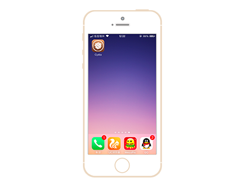
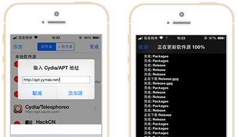

请确保您的iOS设备使用“太极越狱”越狱成功。
越狱猫添加Cydia官方源
添加官方源之前需要越狱iOS设备。(推荐使用太极越狱。)
1
2
打开iOS设备桌面的Cydia。第一次越狱完成后Cydia需要时间加载，等待它加载完成即可。

3
进入Cydia后选择第二个底部栏——软件源，点击右上角“编辑”按钮后再次点击左边添加按钮并输入“http://apt.yymao.net/”最后等待加载完Packages。
具体流程：
Cydia->软件源->编辑->添加->输入源地址

4
至此，你可以进入源中安装你所需要的插件。